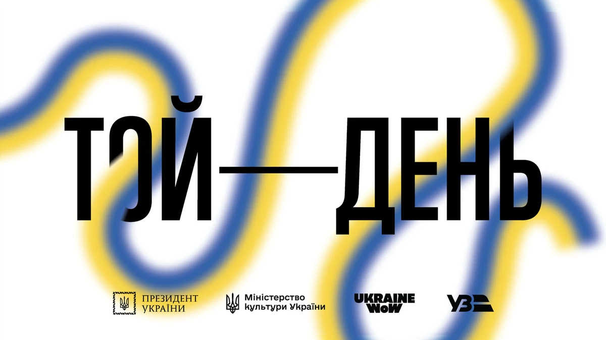
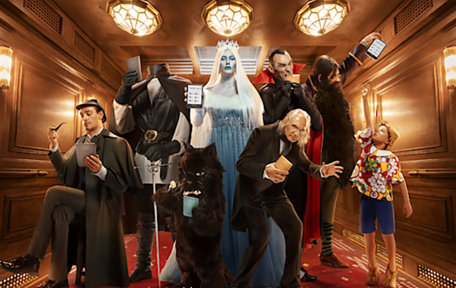

Виставка «Той день»
VR-зйомка для виставки
Зняли у форматі 360° кабінет Президента України, зал засідань Верховної Ради та місце поховання Тараса Шевченка в Каневі.
Про виставку «Той день»З 2015 року знімаємо 360°-відео й створюємо VR-інсталяції, у яких глядач сам обирає, куди дивитися.
Дивитися проєкти

VR-зйомка для виставки
Зняли у форматі 360° кабінет Президента України, зал засідань Верховної Ради та місце поховання Тараса Шевченка в Каневі.
Про виставку «Той день»
Сферична зйомка
Знімали Драгобрат і Бакоту у форматі 360° для Ukraine WOW 2025.
Віртуальний тур виставкою
Інтерактивний VR-застосунок, 2021
Для виставки створили інтерактивний застосунок, у якому відвідувачі могли побачити Чорнобильську зону відчуження з висоти пташиного польоту.
Про проєкт в архіві
VR-інсталяція
Контент для дев’яти VR-зон із гарнітурами Oculus Go на виставці Ukraine WOW.
Про виставку
Брендоване 360°-відео
Шерлок Голмс і Дракула зустрічаються у світі PocketBook. Глядач опиняється в центрі сутички.
Дивитися відео
Імерсивне кіно
Чотири короткі історії про Будапешт, зняті у форматі 360° для Corinthia.
Дивитися тизер
Документальне 360°-відео
Фільм для Samsung про Новий безпечний конфайнмент над четвертим енергоблоком Чорнобильської АЕС.
Дивитися тизерСтатті про наші проєкти та тексти нашої команди про 360°-відео. Матеріали належать їхнім авторам і виданням.
Громадське радіо
Imena.UA Blog (англ.)
Wikipedia (англ.)
Medium · Артем Кисляков
Medium · Артем Кисляков
Новини про виставки з нашого архіву, де згадано віртуальну реальність.
Той день · Kyiv Post
Ukraine WOW · Kyiv Post
Чорнобиль. Подорож · Еспресо
Вражаріум від Smile · Твоє місто
Вражаріум від Smile · УНІАН
Вражаріум від Smile · Bazilik Media
Чорнобиль. Подорож · Суспільне Культура
Чорнобиль. Подорож · Урядовий портал
Ukraine WOW · TechUkraine (англ.)
Парк корупції · УНІАН
Музей новин · ТСН.ua
Facebook-сторінка 360discoVR Limelite / 360discoVR Більше проєктів і посилань — в архіві
У розробці
Наш плеєр для імерсивного відео.

Підбираємо камери, спосіб зйомки й формат показу під ваш проєкт.
Сферичне відео й фотопанорами для VR, віртуальних турів і цифрових експозицій.
Зшивання сферичного відео, монтаж і підготовка матеріалу до показу.
Інтерактивні застосунки для виставок, презентацій та інсталяцій.
Трансляції подій у форматі 360° з можливістю запису та брендованого оформлення.